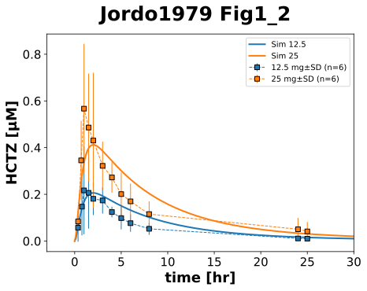
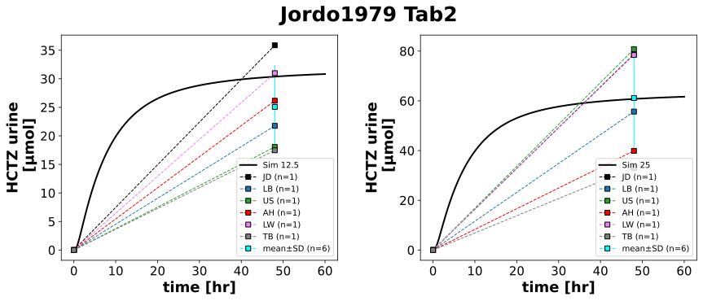

|  |
|  |
../../../../experiments/studies/jordo1979.py
from typing import Dict
import pandas as pd
from sbmlsim.data import DataSet, load_pkdb_dataframe
from sbmlsim.fit import FitMapping, FitData
from sbmlsim.plot import Axis, Figure
from sbmlsim.simulation import Timecourse, TimecourseSim
from sbmlutils.console import console
from pkdb_models.models.hydrochlorothiazide.experiments.base_experiment import (
HCTZSimulationExperiment,
)
from pkdb_models.models.hydrochlorothiazide.experiments.metadata import (
Health, Tissue, ApplicationForm,
Dosing, Route, Fasting, Coadministration,
HCTZMappingMetaData,
)
from pkdb_models.models.hydrochlorothiazide.helpers import run_experiments
class Jordo1979(HCTZSimulationExperiment):
"""Simulation experiment of Jordo1979.
Multiple oral dosing of 12,5mg and 25mg HCTZ.
"""
doses = [12.5, 25]
doses_keys = ["12_5", "25"]
individuals = ["JD", "LB", "US", "AH", "LW", "TB", "mean"]
def datasets(self) -> Dict[str, DataSet]:
dsets = {}
for fig_id in ["Fig1", "Fig2", "Tab2", "Tab2Mean"]:
df: pd.DataFrame = load_pkdb_dataframe(
f"{self.sid}_{fig_id}", data_path=self.data_path
)
for label, df_label in df.groupby("label"):
dset = DataSet.from_df(df_label, self.ureg)
if label.startswith("hctz"):
dset.unit_conversion("mean", 1 / self.Mr.hctz)
elif label.startswith("amount_"):
dset.unit_conversion("value", 1 / self.Mr.hctz)
dset.unit_conversion("mean", 1 / self.Mr.hctz)
dsets[f"{fig_id}_{label}"] = dset
# console.print(dsets.keys())
# print(dsets)
return dsets
def simulations(self) -> Dict[str, TimecourseSim]:
Q_ = self.Q_
tcsims = {}
for dose in self.doses:
tcsims[f"hctz{dose}"] = TimecourseSim(
Timecourse(
start=0,
end=60 * 60, # [min]
steps=500,
changes={
**self.default_changes(),
"PODOSE_hctz": Q_(dose, "mg"),
},
)
)
return tcsims
def fit_mappings(self) -> Dict[str, FitMapping]:
mappings = {}
# Fig1_2
for kd, dose in enumerate([12.5, 25]):
fig_id = f"Fig{kd+1}"
mappings[f"fm_{fig_id}_{dose}_hctz"] = FitMapping(
self,
reference=FitData(
self,
dataset=f"{fig_id}_hctz{str(dose).replace('.', '_')}",
xid="time",
yid="mean",
yid_sd="mean_sd",
count="count",
),
observable=FitData(
self, task=f"task_hctz{dose}", xid="time", yid="[Cve_hctz]"
),
metadata=HCTZMappingMetaData(
tissue=Tissue.PLASMA,
application_form=ApplicationForm.TABLET,
route=Route.PO,
dosing=Dosing.SINGLE,
health=Health.HEALTHY,
fasting=Fasting.FASTED,
coadministration=Coadministration.NONE,
),
)
# Tab2
tab2_info = [
(12.5, "Aurine_hctz", "amount_cumulative"),
(25, "Aurine_hctz", "amount_cumulative"),
]
for kd, individual in enumerate(self.individuals):
for dose, yid, name in tab2_info:
mappings[f"fm_Tab2_{kd}_{dose}_{name}"] = FitMapping(
self,
reference=FitData(
self,
dataset=f"Tab2Mean_{name}_hctz{str(dose).replace('.', '_')}" if "mean" in individual else f"Tab2_{name}_hctz{str(dose).replace('.', '_')}_{individual}",
xid="time",
yid="mean" if "mean" in individual else "value",
yid_sd="mean_sd" if "mean" in individual else None,
count="count",
),
observable=FitData(
self, task=f"task_hctz{dose}", xid="time", yid=yid
),
metadata=HCTZMappingMetaData(
tissue=Tissue.URINE,
application_form=ApplicationForm.TABLET,
route=Route.PO,
dosing=Dosing.SINGLE,
health=Health.HEALTHY,
fasting=Fasting.FASTED,
coadministration=Coadministration.NONE,
),
)
# console.print(mappings)
return mappings
def figures(self) -> Dict[str, Figure]:
return {
**self.figure_Fig1_2(),
**self.figure_Tab2(),
}
def figure_Fig1_2(self) -> Dict[str, Figure]:
name = "Fig1_2"
fig = Figure(
experiment=self,
sid=name,
num_rows=1,
num_cols=1,
name=f"{self.__class__.__name__} {name}",
)
colors = ["tab:blue", "tab:orange"]
plots = fig.create_plots(
xaxis=Axis(self.label_time, unit="hr", max=30),
legend=True,
)
plots[0].set_yaxis(self.label_hctz, unit=self.unit_hctz)
# simulation
for kd, dose in enumerate([12.5, 25]):
plots[0].add_data(
task=f"task_hctz{dose}",
xid="time",
yid="[Cve_hctz]",
label=f"Sim {dose}",
color=colors[kd],
)
# data
for kd, dose in enumerate([12.5, 25]):
plots[0].add_data(
dataset=f"Fig{kd+1}_hctz{str(dose).replace('.', '_')}",
xid="time",
yid="mean",
yid_sd="mean_sd",
count="count",
label=f"{dose} mg",
color=colors[kd],
)
return {
fig.sid: fig,
}
def figure_Tab2(self) -> Dict[str, Figure]:
name = "Tab2"
fig = Figure(
experiment=self,
sid=name,
num_rows=1,
num_cols=2,
name=f"{self.__class__.__name__} {name}",
)
plots = fig.create_plots(xaxis=Axis(self.label_time, unit="hr"), legend=True)
plots[0].set_yaxis(label=self.label_hctz_urine, unit=self.unit_hctz_urine)
plots[1].set_yaxis(label=self.label_hctz_urine, unit=self.unit_hctz_urine)
colors = ["black", "tab:blue", "tab:green", "red", "violet", "grey", "cyan"]
# simulation
for kplot, dose, yid in [
(0, 12.5, "Aurine_hctz"),
(1, 25, "Aurine_hctz"),
]:
plots[kplot].add_data(
task=f"task_hctz{dose}",
xid="time",
yid=yid,
label=f"Sim {dose}",
color="black",
)
# data
for kd, individual in enumerate(self.individuals):
for kplot, dose, name in [
(0, 12.5, "amount_cumulative"),
(1, 25, "amount_cumulative"),
]:
plots[kplot].add_data(
dataset=f"Tab2Mean_{name}_hctz{str(dose).replace('.', '_')}" if "mean" in individual else f"Tab2_{name}_hctz{str(dose).replace('.', '_')}_{individual}",
xid="time",
yid="mean" if "mean" in individual else "value",
yid_sd="mean_sd" if "mean" in individual else None,
count="count",
label=f"{individual}",
color=colors[kd],
)
return {
fig.sid: fig,
}
##### Plotting Tab2Mean which is the mean of individual data listed in Tab2
# def figure_Tab2Mean(self) -> Dict[str, Figure]:
# name = "Tab2"
# fig = Figure(
# experiment=self,
# sid=name,
# num_rows=1,
# num_cols=1,
# name=f"{self.__class__.__name__} {name}",
# )
#
# plots = fig.create_plots(xaxis=Axis(self.label_time, unit="hr"), legend=True)
# #plots[0].set_yaxis(label="urinary recovery", unit="percent") ##unable to model recovery yet hence conversion to cumulative amount below
# plots[0].set_yaxis(label="cumulative amount in urine", unit="mg")
#
# # simulation ## recovery
# for kd, dose in enumerate(self.doses):
# dose_key = self.doses_keys[kd]
# plots[0].add_data(
# task=f"task_hctz{dose}",
# xid="time",
# yid="Aurine_hctz", #FIXME
# label=f"Sim {dose_key}",
# color=self.color_hctz,
# )
#
# # data
# plots[0].add_data(
# dataset=f"Tab2_amount_cumulative_hctz{dose_key}",
# xid="time",
# yid="mean",
# yid_sd="mean_sd",
# count="count",
# label=f"{dose} mg hydrochlorothiazide",
# color=self.color_hctz,
# )
#
# return {
# fig.sid: fig,
# }
if __name__ == "__main__":
run_experiments(Jordo1979, output_dir=Jordo1979.__name__)
{kind=link}
{kind=link}